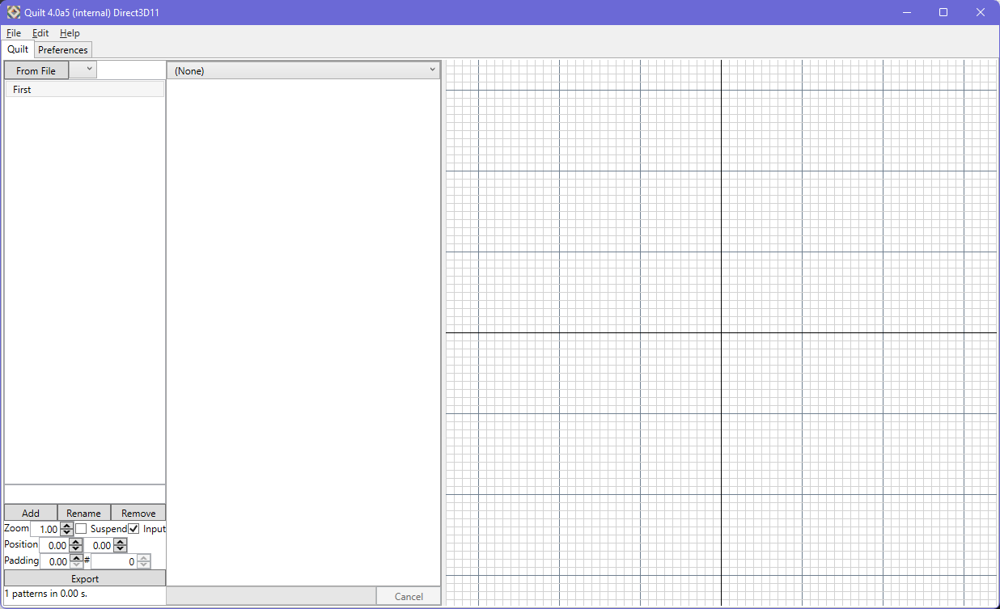

Quilt is a single window application, that can be resized to make the viewport larger.

Quilt generates a grid of patterns. Each pattern in the grid is unique (no duplicates), and derives from the base configuration of pattern elements that you have defined. Patterns within the quilt never overlap each other - they are placed according to the X and Y dimensions of the largest pattern in the quilt. The user can also define a padding value that will insert a fixed-width gap between each pattern in the quilt, in both X and Y.
To edit the properties for an existing pattern element, simply select it in the list on the left of the interface. The properties will be shown, and can then be edited. With a pattern element selected, the quilt preview in the viewport will emphasize the shapes coming from that element.
To add a new pattern element to the list, enter a name into the text box just below the listing. Then use the 'Add' button.
To rename a pattern element from the list, select it in the list and use the 'Rename' button.
Regarding naming, you can define an explicit target output layer and datatype using LxxDyy convention (e.g. L12D3 will export the pattern element to layer 12, datatype 3).
To remove a pattern element from the list, select it in the list and use the 'Remove' button.
To load pattern element definitions from a layout file, choose 'from file' and choose the GDSII or Oasis file that you want to use.
The camera zoom is shown in the marked numeric field. It can be manually set, and also updates as the mouse wheel is used over the viewport to change the zoom.
The camera position is changed with the two numeric 'Position' inputs, for X and Y respectively. The values are updated as the viewport is navigated, and can be be manually entered to move to a specific location.
The padding control increases the placement interval in both X and Y of the patterns in the quilt.
The '#' control moves the viewport to the lower left corner of the pattern number that is entered. The position fields will update to indicate the exact location.
To remove a pattern element from the list, select it in the list and use the 'Remove' button.
The 'Edit' menu offers copy/paste commands for copying a pattern element definition from/to the selected pattern element.
Quilt internally supports a minimum value of 0.01 units, which corresponds to 0.01 nm in the Oasis / GDSII layout files.
The listbox also offers a right-click context menu in order to perform certain actions more conveniently.